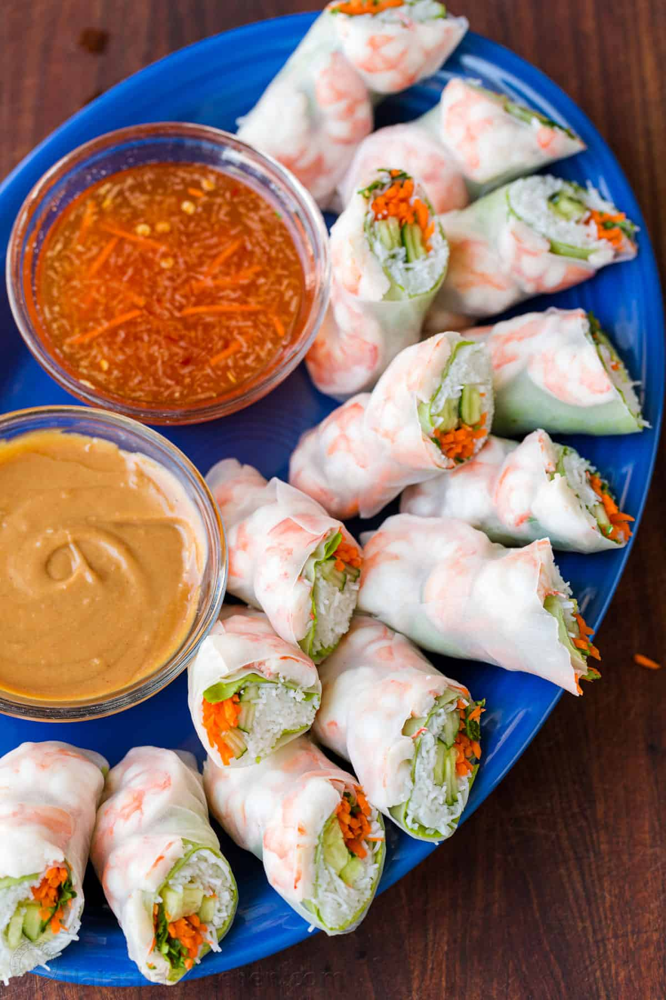

Vietnamese Spring Rolls

Homemade fresh Vietnamese Spring Rolls are easy to make and perfect for summer gatherings or a light dinner tonight.
Ingredients
Fresh Spring Roll Ingredients:
- 1 lb Large Shrimp, 21-25 count, peeled and deveined (keep the shells to boil shrimp)
- 3 oz Vermicelli Rice Noodles
- 1/2 Butter Lettuce, 15 leaves
- 2 Carrots, peeled and julienned
- 1/2 English Cucumber julienned, or 3 small cucumbers
- 1 cup Cilantro sprigs
- 15 Round Rice Paper Sheets, 8.5” diameter
Vietnamese Spring Roll Dipping Sauce:
- 1/3 cup water, preferably filtered
- 1/4 cup fish sauce, three crabs brand
- 1/4 cup granulated sugar, or to taste
- 2 Tbsp lime juice, freshly squeezed from 1 lime
- 2 tsp rice wine vinegar
- 2 tsp chili garlic sauce, or to taste (more will make it spicier)
- 1 large garlic clove, grated of finely minced (or 2 small cloves)
- 2 tsp sesame oil
- 1 tbsp shredded carrot
Peanut Dipping Sauce:
- 1 cup sesame ginger dressing, Newmans Own brand
- 2 heaping Tbsp peanut butter
Instructions
How to Make Spring Rolls:
-
Boil shrimp according to our boiled shrimp recipe then immediately cool in ice water. Once
boiled and cooled, drain and cut shrimp in half lengthwise.
-
Cook noodles according to package instructions until softened (do not overcook) then drain in a
colander and rinse with cold water. Let noodles drain in a colander until ready to assemble. You can also fill a
saucepan with water and bring it to a boil, add the noodles, turn off the heat and let them sit in hot water for
5-7 minutes.
-
Prep veggies - julienne cucumbers and carrots, remove stiff stems on lettuce leaves, coarsely
chop cilantro.
-
Assemble spring rolls One at a Time. Fill a shallow round bowl (wider than your wrappers) with
very warm/hot water. Submerge spring roll wrapper for about 10-15 seconds or until softened(depending on the
temperature of your water). Place wet spring roll wrapper on a clean and lightly wet cutting board.
-
Add veggies on one half in this order: lettuce, a generous pinch of noodles, carrots, cucumber,
cilantro sprigs.
-
Add shrimp on the second half, placing the shrimp cut-side up.
-
Tightly roll up the lettuce side first, tuck in the sides then roll over the shrimp so shrimp are
visible on the outside.
-
To serve - Transfer finished rolls to a serving platter and keep finished spring rolls covered
with a damp kitchen towel so they do not dry out. For a prettier presentation, serve cut in half on the diagonal.
How to Make Vietnamese Dipping Sauce:
- In a small mixing bowl, combine all dipping sauce ingredients, adding sugar and sesame oil (if using), to taste.
How to Make Peanut Dipping Sauce:
- In a mason jar, combine dressing and peanut butter, cover tightly with lid and shake until smooth and well
combined.